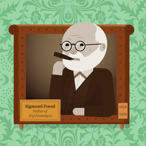

Psicología
a tu alcance
No hay psicología; solo hay biografía y autobiografía.
(Thomas Szasz)
Para quitar música de fondo: Click en el botón /
Psicología Clínica
Clínica

Para comprender el significado de psicología clínica es importante que primero establezcamos el origen etimológico de las dos palabras que dan forma al término. Así, el primer vocablo, psicología, emana del griego donde podemos apreciar que está conformado por la unión de dos partes claramente delimitadas: psyche, que es sinónimo de “alma”, y logia.
Por otra parte, la segunda palabra, clínica, también procede del griego. En concreto sus antecedentes se encuentran en el término kline que es equivalente a “cama”.
La psicología clínica se encarga de la investigación, la evaluación, el diagnóstico, el pronóstico, el tratamiento, la rehabilitación y la prevención de las cuestiones que afectan a la salud mental. Se trata de una rama de la psicología que atiende las condiciones que pueden generar malestar o sufrimiento a las personas.
La psicoterapia y el asesoramiento psicológico son dos de las principales prácticas de esta disciplina, cuyos orígenes se remontan a 1896 de la mano de Lightner Witmer. Durante las primeras décadas del siglo XX, la psicología clínica se centró en la evaluación psicológica; sin embargo, a partir de la Segunda Guerra Mundial, los esfuerzos se encaminaron hacia el tratamiento de los pacientes.
Es importante distinguir entre la psicología clínica y la psiquiatría, ya que los psiquiatras cuentan con autorización legal para la prescripción de medicamentos. Por otra parte, cabe destacar que la psicología clínica tiene cuatro orientaciones teóricas primarias: la psicodinámica, la humanista, la cognitiva comportamental y la terapia familiar.
No obstante, hay que seguir ahondando en la materia para poder determinar que actualmente la psicología clínica tiene muchos campos de estudio. Así, entre los mismos nos encontramos con la psicología social, la psicología comunitaria, la neuropsicología clínica, la psiconeuroinmulogía o la psicooncología.
Esta última podemos determinar que es una disciplina, a medio camino entre la medicina y la psicología, que toma como punto de partida el descubrimiento de un cáncer a una persona. A partir de ese mazazo se analizan las relaciones que se establecen entre el enfermo y su entorno, el tratamiento, el estado de salud o los comportamientos.
Todo ello da lugar a que se establezca que, a través de este tipo de psicología, no sólo hay que tratar al paciente sino también a su familia, que hay que incentivar en todo momento la dignidad de aquel, que hay que promover lo que es la autonomía del mismo y también que es fundamental el cuidar todos los aspectos del entorno porque influyen en su recuperación.
Entre los síntomas psicológicos que atiende la psicología clínica, se encuentran los trastornos somáticos (que pueden aparecer de manera aguda o estar presentes de modo constante), los trastornos psíquicos (como la sensación de temor o las preocupaciones infundadas) y los trastornos conductuales (la inquietud motora, la irritabilidad y las perturbaciones del sueño, entre otros).
Cabe mencionar, entre los trastornos somáticos, a los síntomas cardiovasculares (son los más frecuentes, como la taquicardia con palpitaciones), los síntomas respiratorios (sensación de falta de aire o de ahogo), los síntomas gastrointestinales (nauseas, vómitos) y los síntomas genitourinarios (como la impotencia transitoria o los trastornos del ciclo menstrual).
Áreas y modalidades

La Psicología Clínica se ha venido desarrollando a lo largo de muchas décadas y sus temas de investigación han captado el interés de gran cantidad de estudiosos del comportamiento, desde como se comentaba, la importancia que tuvo Wundt y Almi con su laboratorio en Leipzig, objetividad misma de la psicología, siendo el área de especialización preferida por la mayoría de los profesionales de la Psicología, dentro de la multitud de enfoques y elementos que se desarrollan en la Clínica, existen algunos que son principales como campos de estudio actuales en la psicología clínica:
- Psicología de familia y pareja.
- Psicología Clínica de adultos
- Psicología Clínica infanto-juvenil
- Neuropsicología Clínica
- Rehabilitación Neuropsicológica
- Psicopatología
- Evaluación Psicológica
- Psicoterapia en sus diversas corrientes teóricas
- Psicología Social
- Psicología comunitaria
- Psicología de la Salud
- Psicología Médica
- Psicooncología
- Psiconeuroinmunología
- Psicología Clínica Comunitaria
Artículos Interesantes
Cómo una buena novela “masajea” las neuronas

En este estudio se analizaron los cambios que tienen lugar en las funciones y las estructuras cerebrales como consecuencia de la lectura de una novela. Los investigadores reclutaron a 21 estudiantes, a los cuales les dieron seguimiento durante 19 días. Durante los primeros cinco días los investigadores solo escanearon sus cerebros, para tener un punto de partida con el cual comparar.
Durante los siguientes nueve días los participantes leyeron una novela de 30 páginas, todas las noches. A la mañana siguiente, sus cerebros eran escaneados. Después de terminar la novela, durante los cinco días siguientes, los investigadores siguieron escaneando sus cerebros.
Los resultados revelaron una gran actividad en la corteza temporal izquierda, el área del cerebro vinculada con la recepción del lenguaje. También se apreció un aumento de la conectividad, sugiriendo que las personas habían “somatizado” la experiencia semántica. Es decir, el cerebro de los lectores imitaba las acciones físicas de los personajes. De hecho, los cambios neurológicos que se apreciaron respecto a las sensaciones físicas y los sistemas de movimiento sugieren que leer una novela nos puede transportar, literalmente, al cuerpo del protagonista.
Además, lo más interesante fue que esos cambios persistieron cinco días después de haber terminado la novela, lo cual indica que los efectos de la lectura no cesan cuando cerramos el libro.
Otro estudio, realizado por investigadores de la Universidad de Harvard, también desveló que una buena novela estimula lo que se conoce como “Red por Defecto”, una red de neuronas que se activa cuando la mente está en reposo.
En este caso, los participantes fueron sometidos a una Resonancia Magnética Funcional, para ver qué áreas del cerebro se activaban en relación con determinadas tareas, mientras leían partes de novelas, biografías, revistas y libros de autoayuda.
Así se pudo apreciar que, en dependencia del tipo de lectura, solo se activan algunas partes de esa red. Por ejemplo, la novela fue la lectura que mayor activación provocó, dentro de ella, los apartados que describen a personas y pensamientos activaron la corteza prefrontal medial, en el área frontal del cerebro. Por otra parte, los contenidos que describían un contenido más físico estimularon la actividad de los lóbulos temporales medios y la circunvolución temporal medial anterior.
La corteza prefrontal es el área del cerebro que más se ha desarrollado a lo largo de la evolución, en comparación con otras especies animales. Por eso, es la principal responsable de las funciones cognitivas superiores, como el pensamiento abstracto, la capacidad para predecir las consecuencias de un acto en el futuro, la posibilidad de distinguir entre el bien y el mal y la capacidad para tomar decisiones.
Los lóbulos temporales contienen estructuras importantes para la memoria, como el hipocampo, o para la percepción y la elaboración del contenido emocional de los estímulos, como la amígdala.
Durante la lectura, estas áreas del cerebro son la base neurobiológica que nos permite comprender la narrativa. Gracias a estas zonas cerebrales podemos comprender no solo las palabras sino las relaciones sociales que se establecen entre los personajes, podemos intuir los sentimientos y, por supuesto, ponernos en su lugar y ser empáticos o asumir sus formas de pensar. Es lo que se conoce como “Teoría de la Mente”.
De hecho, una buena novela es como una llave maestra para comprender la mente humana y desvelar los aspectos que hacen resonancia emocional en nosotros. Esto se debe a que somos capaces de atribuir un sentido a las conductas de los demás, por tanto, también a los personajes de una novela. Esta habilidad se conoce como “Teoría de la Mente” y, si no la tuviéramos, no podríamos disfrutar de una novela ya que seríamos incapaces de ponernos en el lugar de los protagonistas.
Según otro estudio, esta vez realizado en la Universidad de Princeton, leer una novela durante una semana provoca un aumento considerable de la empatía, pero solo si hemos sido capaces de ponernos en la piel del personaje, comprender sus ideas y experimentar sus emociones.
En realidad, no se trata de un resultado inesperado ya que investigaciones anteriores habían confirmado que la literatura de ficción es un potente estímulo cerebral que nos permite experimentar otros mundos, personas y estados mentales diferentes. Nos permite vivir otras vidas.
Un estudio realizado en la New School for Social Research de Nueva York ha ido un paso más allá para demostrar que la empatía solo aumenta cuando leemos una ficción literaria, no las historias de entretenimiento.
Estos investigadores explican que cuando leemos una novela debemos activar nuestros recursos interpretativos para deducir los sentimientos e ideas de los personajes, debemos activar la Teoría de la Mente. Las historias de entretenimiento, como las que se pueden leer en las revistas del corazón o en las clásicas novelas románticas, pintan un mundo coherente, donde los personajes son muy previsibles, por lo que son más bien una confirmación de nuestras expectativas y no promueven ese proceso de razonamiento.
1. Que debemos dedicarle más tiempo a la lectura ya que se trata de una actividad muy beneficiosa para nuestro cerebro.
2. Que una buena novela no implica perder el tiempo, todo lo contrario, nos ayuda a desarrollar diferentes funciones cerebrales.
3. Que debemos tener más cuidado con las lecturas que elegimos ya que hay "lecturas vacías" que no nos aportan nada.
No hay nada como un buen libro para hacer volar nuestra imaginación y activar nuestra mente. De hecho, hace algunos años los neurocientíficos apreciaron que cuando leemos palabras como “perfume” o “café” se activan las partes del cerebro vinculadas con la percepción de los aromas, como si nosotros mismos estuviésemos percibiendo esos olores.
Hasta el momento, nos habíamos centrado en monitorizar la actividad cerebral durante la lectura, queríamos saber qué pasa en nuestro cerebro mientras leemos. Sin embargo, ahora una investigación realizada en la Universidad de Emory ha ido un paso más allá y sugiere que los efectos de la lectura en el cerebro son a largo plazo.
Según esta investigación, leer una buena novela es como recibir un “masaje” suave pero poderoso, directamente en el cerebro, cuyos efectos no desaparecen inmediatamente después de la lectura sino que se extienden a lo largo del tiempo. De hecho, la lectura activa diferentes redes neuronales, en función de su contenido emocional y visual-espacial.
Los efectos de una buena novela no desaparecen al cerrar el libro
En este estudio se analizaron los cambios que tienen lugar en las funciones y las estructuras cerebrales como consecuencia de la lectura de una novela. Los investigadores reclutaron a 21 estudiantes, a los cuales les dieron seguimiento durante 19 días. Durante los primeros cinco días los investigadores solo escanearon sus cerebros, para tener un punto de partida con el cual comparar.
Durante los siguientes nueve días los participantes leyeron una novela de 30 páginas, todas las noches. A la mañana siguiente, sus cerebros eran escaneados. Después de terminar la novela, durante los cinco días siguientes, los investigadores siguieron escaneando sus cerebros.
Los resultados revelaron una gran actividad en la corteza temporal izquierda, el área del cerebro vinculada con la recepción del lenguaje. También se apreció un aumento de la conectividad, sugiriendo que las personas habían “somatizado” la experiencia semántica. Es decir, el cerebro de los lectores imitaba las acciones físicas de los personajes. De hecho, los cambios neurológicos que se apreciaron respecto a las sensaciones físicas y los sistemas de movimiento sugieren que leer una novela nos puede transportar, literalmente, al cuerpo del protagonista.
Además, lo más interesante fue que esos cambios persistieron cinco días después de haber terminado la novela, lo cual indica que los efectos de la lectura no cesan cuando cerramos el libro.
La novela activa las redes neuronales por defecto
Otro estudio, realizado por investigadores de la Universidad de Harvard, también desveló que una buena novela estimula lo que se conoce como “Red por Defecto”, una red de neuronas que se activa cuando la mente está en reposo.
En este caso, los participantes fueron sometidos a una Resonancia Magnética Funcional, para ver qué áreas del cerebro se activaban en relación con determinadas tareas, mientras leían partes de novelas, biografías, revistas y libros de autoayuda.
Así se pudo apreciar que, en dependencia del tipo de lectura, solo se activan algunas partes de esa red. Por ejemplo, la novela fue la lectura que mayor activación provocó, dentro de ella, los apartados que describen a personas y pensamientos activaron la corteza prefrontal medial, en el área frontal del cerebro. Por otra parte, los contenidos que describían un contenido más físico estimularon la actividad de los lóbulos temporales medios y la circunvolución temporal medial anterior.
Las funciones de las diferentes áreas del cerebro involucradas en la lectura
La corteza prefrontal es el área del cerebro que más se ha desarrollado a lo largo de la evolución, en comparación con otras especies animales. Por eso, es la principal responsable de las funciones cognitivas superiores, como el pensamiento abstracto, la capacidad para predecir las consecuencias de un acto en el futuro, la posibilidad de distinguir entre el bien y el mal y la capacidad para tomar decisiones.
Los lóbulos temporales contienen estructuras importantes para la memoria, como el hipocampo, o para la percepción y la elaboración del contenido emocional de los estímulos, como la amígdala.
Durante la lectura, estas áreas del cerebro son la base neurobiológica que nos permite comprender la narrativa. Gracias a estas zonas cerebrales podemos comprender no solo las palabras sino las relaciones sociales que se establecen entre los personajes, podemos intuir los sentimientos y, por supuesto, ponernos en su lugar y ser empáticos o asumir sus formas de pensar. Es lo que se conoce como “Teoría de la Mente”.
De hecho, una buena novela es como una llave maestra para comprender la mente humana y desvelar los aspectos que hacen resonancia emocional en nosotros. Esto se debe a que somos capaces de atribuir un sentido a las conductas de los demás, por tanto, también a los personajes de una novela. Esta habilidad se conoce como “Teoría de la Mente” y, si no la tuviéramos, no podríamos disfrutar de una novela ya que seríamos incapaces de ponernos en el lugar de los protagonistas.
Una buena novela aumenta la empatía
Según otro estudio, esta vez realizado en la Universidad de Princeton, leer una novela durante una semana provoca un aumento considerable de la empatía, pero solo si hemos sido capaces de ponernos en la piel del personaje, comprender sus ideas y experimentar sus emociones.
En realidad, no se trata de un resultado inesperado ya que investigaciones anteriores habían confirmado que la literatura de ficción es un potente estímulo cerebral que nos permite experimentar otros mundos, personas y estados mentales diferentes. Nos permite vivir otras vidas.
Un estudio realizado en la New School for Social Research de Nueva York ha ido un paso más allá para demostrar que la empatía solo aumenta cuando leemos una ficción literaria, no las historias de entretenimiento.
Estos investigadores explican que cuando leemos una novela debemos activar nuestros recursos interpretativos para deducir los sentimientos e ideas de los personajes, debemos activar la Teoría de la Mente. Las historias de entretenimiento, como las que se pueden leer en las revistas del corazón o en las clásicas novelas románticas, pintan un mundo coherente, donde los personajes son muy previsibles, por lo que son más bien una confirmación de nuestras expectativas y no promueven ese proceso de razonamiento.
¿Qué enseñanzas podemos extraer de todas estas investigaciones?
1. Que debemos dedicarle más tiempo a la lectura ya que se trata de una actividad muy beneficiosa para nuestro cerebro.
2. Que una buena novela no implica perder el tiempo, todo lo contrario, nos ayuda a desarrollar diferentes funciones cerebrales.
3. Que debemos tener más cuidado con las lecturas que elegimos ya que hay "lecturas vacías" que no nos aportan nada.